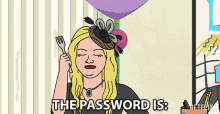

PREČO SKENUJEŠ NÁHODNÉ QR KÓDY???

https://www.aarp.org/money/scams-fraud/info-2021/qr-codes.html
https://www.kaspersky.com/resource-center/definitions/what-is-a-qr-code-how-to-scan
https://www.washingtonpost.com/technology/2021/10/07/are-qr-codes-safe/
https://www.nbcboston.com/news/local/think-before-you-scan-scammers-can-use-qr-codes-to-steal-your-information/2955087/